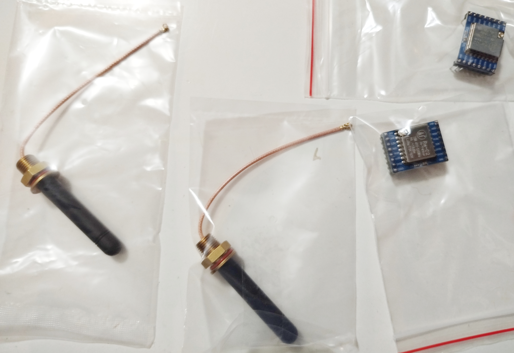
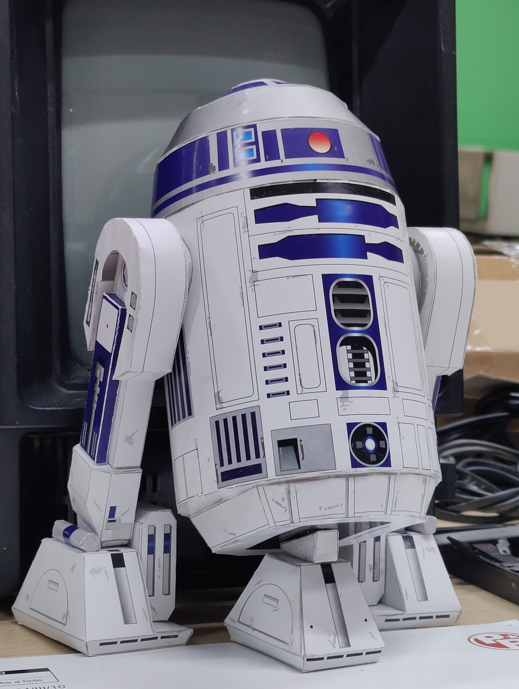

Arduino
OLED
DHT11
01.OLED DHT11 Mini Dashboard
Συμπαγές dashboard με DHT11 και OLED που προβάλλει θερμοκρασία, υγρασία, εικονίδια και scrolling τίτλο σε οθόνη 128x64.
Συλλογή από μικρά, κατανοητά Arduino και ESP32 projects για εκπαιδευτική χρήση, ιδανικά για σχολικά εργαστήρια. Τα projects αναπτύχθηκαν στον χώρο του Συλλόγου Τεχνολογίας Θράκης, στο πλαίσιο του MakerLab που πραγματοποιείται κάθε Σάββατο.
Συμπαγές dashboard με DHT11 και OLED που προβάλλει θερμοκρασία, υγρασία, εικονίδια και scrolling τίτλο σε οθόνη 128x64.

Εκπαιδευτικό 4WD robot car με manual control, line tracking και obstacle avoidance σε σταθερή fail-safe λογική.

LoRa σύστημα transmitter/receiver που μεταδίδει θερμοκρασία DS18B20 σε μεγάλες αποστάσεις στα 434MHz.
ESP32-C3 IoT terminal που λαμβάνει τιμή Brent από API και την εμφανίζει ζωντανά σε OLED οθόνη.

Mini arcade project με TFT οθόνη 1.8", push button και γρήγορα SPI γραφικά, βασισμένο σε Flappy Bird gameplay.

Δημιουργικό Arduino robot με voice commands, ήχους, servo κίνηση και χειροποίητο papercraft σώμα με εσωτερική στήριξη hardware.

Endless runner εμπνευσμένο από το offline Dino του Chrome, με onboard TFT οθόνη και έλεγχο από ένα κουμπί.

Στον χώρο του Συλλόγου Τεχνολογίας Θράκης πραγματοποιείται κάθε Σάββατο το απόγευμα ένα ανοιχτό εργαστήριο δημιουργίας με μικροελεγκτές, με έμφαση σε μικρά και πρακτικά projects με Arduino, ESP32 και άλλα εκπαιδευτικά ηλεκτρονικά συστήματα.
Τα εργαστήρια έχουν βιωματικό χαρακτήρα και απευθύνονται σε όλα τα μέλη και τους φίλους του συλλόγου που θέλουν να γνωρίσουν τον κόσμο των κατασκευών, του προγραμματισμού και της ρομποτικής μέσα από συνεργασία, πειραματισμό και δημιουργική συμμετοχή.